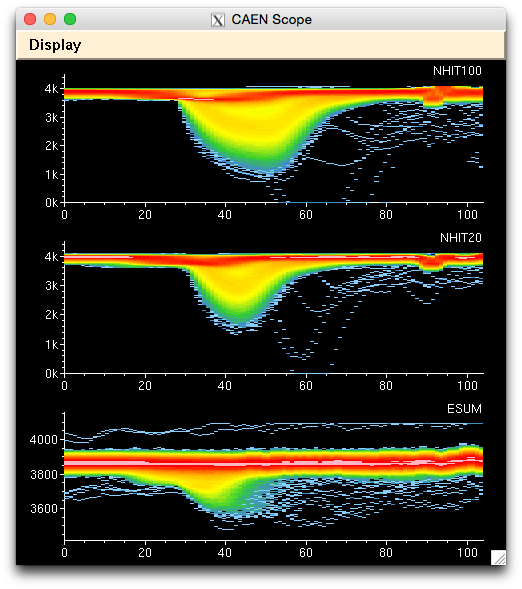

The CAEN Scope window shows digitized trigger waveforms for up to 8 trigger channels. The scales of each channel may be set independently, and are saved with the XSnoed settings. The channel labels may be set by editing the XSnoed resource file and re-running XSnoed. In sum mode (set from File/Sum Events in the main window menu) the scope overlays all traces with a colour scale to indicate the density of traces.
The trace colors may be set via the Colors settings. The colors used in sum mode are the same as for the PMT hits.
The Display menu in this window allows you to set the channels to be displayed. By default the previously selected channels are displayed, but this can be changed to display any combination of channels, or only channels with data. Note that if Channels with Data is selected, the displayed channels will only change if data is available (so zero channels will not be displayed).
The Auto Scale menu option causes the hisogram Y axes to automatically rescale to suit the range of the data.
The Log Color Sum menu option sets a log scale for the colours in sum mode. The image below shows sum mode with the logarithmic colour scale.
